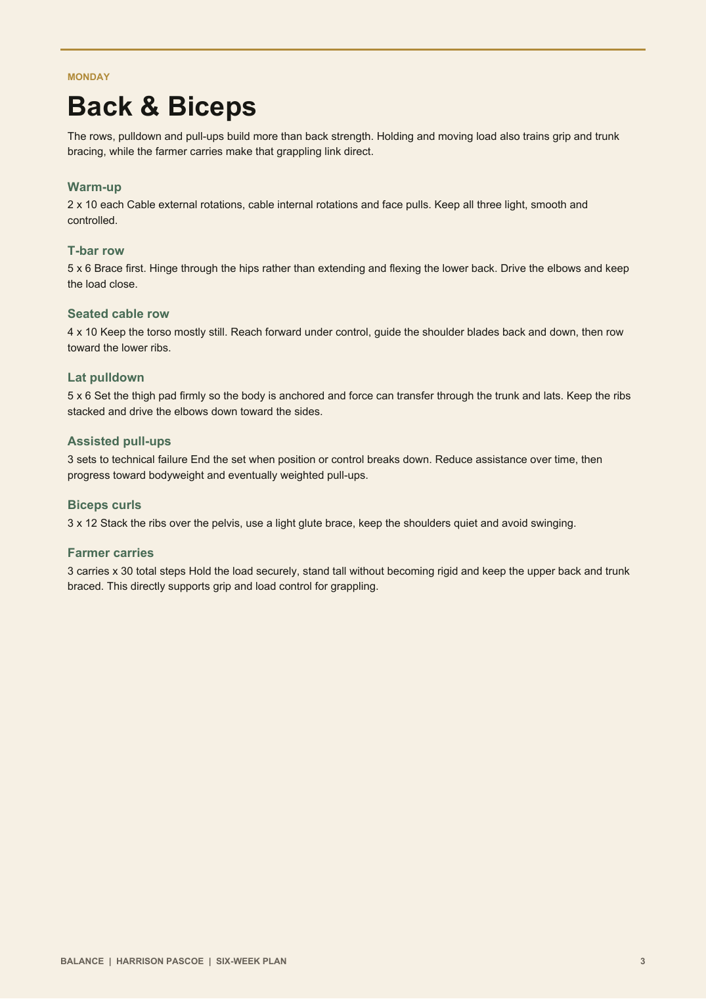
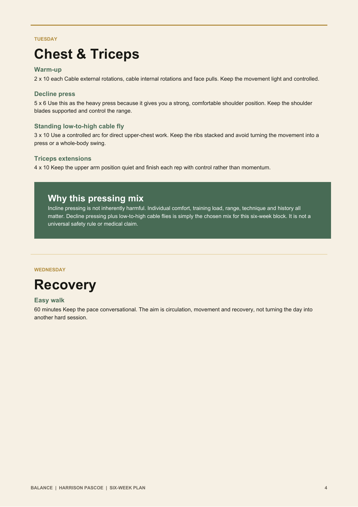
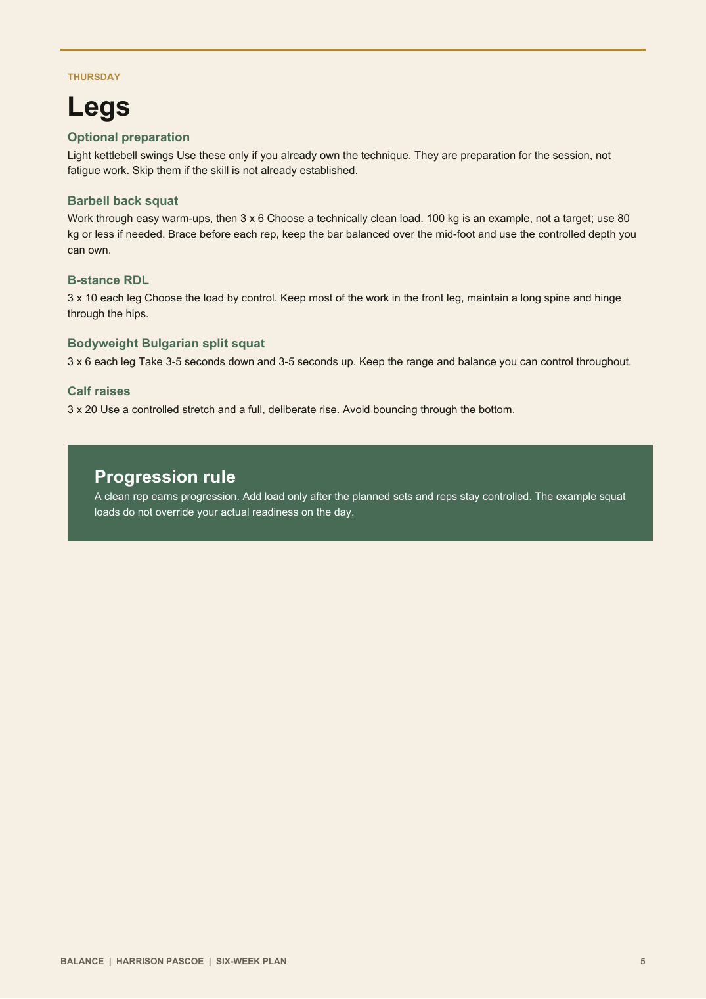
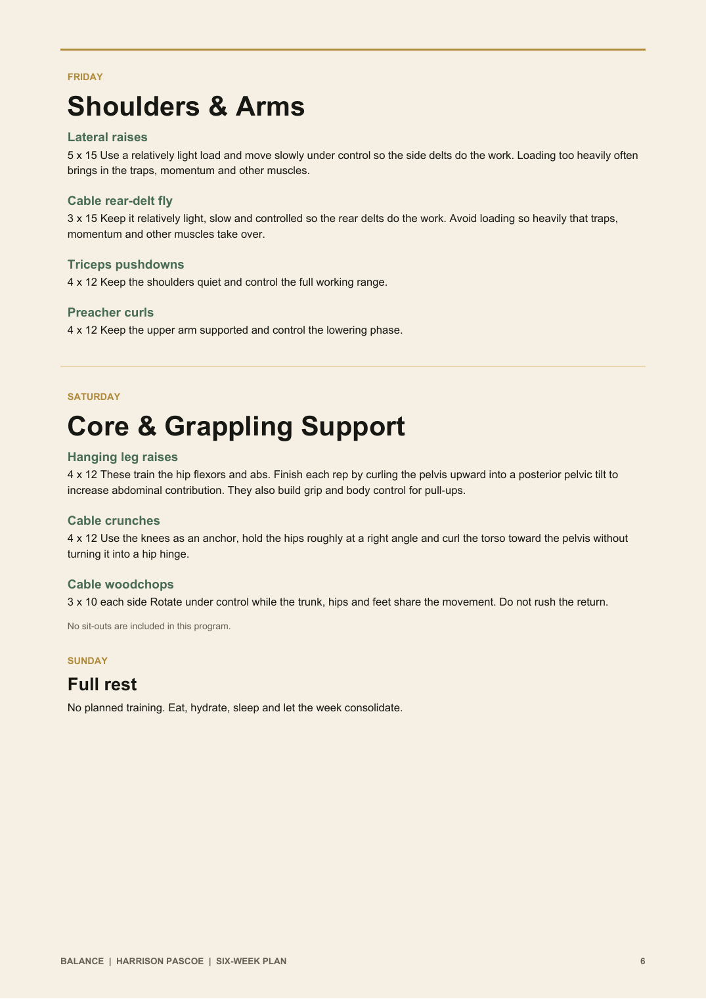

Your six-week Balance plan
Harrison Pascoe
Aesthetics. Functional strength. Grappling support.
The brief
A fixed six-week training plan designed to build useful strength, muscle and repeatable habits. It gives you a clear structure to follow, evidence to collect and a practical foundation for grappling. It does not promise weekly plan changes inside this six-week block.
Prepared by Shannon Birch
Balance coaching
How to use the plan
Simple rules for the six weeks
- Follow the weekly structure. Recovery days are part of the program, not missed training.
- Use technically clean reps. Stop a set when the target movement or position breaks down.
- For loaded work, begin with a weight you control and progress only when the planned reps stay clean.
- Share completed workouts into the Balance feed so effort and progress become visible.
- If a movement causes sharp, escalating or unusual pain, stop and get appropriate professional guidance.
Posture for performance
Posture is control of your ribcage, pelvis and shoulder blades around your centre of mass while you breathe, move and handle load. It is not a stiff, perfect pose. Training your upper back, trunk, hips and shoulders builds the capacity to keep producing force and adapting position during grappling.




Progressing your lifts
Build reps, then load
Work inside the stated rep range with clean form. Add reps from session to session. When you reach the top of the range across all working sets, make a small weight increase and build the reps again. Retain the load or step it back if your form degrades.
You’ll find your meal plan in the app.
General nutrition guidance
Keep healthy eating practical
Build most meals around a useful protein source, vegetables or fruit, a carbohydrate source that supports training and an amount of dietary fat that suits the meal. Choose mostly minimally processed foods, drink water regularly and keep the pattern flexible enough to repeat. One imperfect meal or messy day does not undo the week; return to the next useful choice.
Alcohol
Regular or heavy alcohol can add a meaningful amount of energy, interfere with fat oxidation, disrupt sleep and make food choices harder. It can also blunt the post-training muscle-protein-synthesis response. This is not a moral judgement; it is simply a trade-off to include when you assess recovery and progress.
Balance Learn
Your free six-week course access
Shannon is including Balance Learn free for this six-week program. The current course contains six weekly sections with five interactive lesson-to-quiz experiences in each week: 30 quizzes in total.
Understand why change feels hard.
Work with your energy, not against it.
Build a rhythm that can stick.
Understand cravings and choices.
Make the better choice easier.
Build a flexible pattern you can keep.
Expectation for Phase Two
Complete the Balance Learn course during this six-week block. Shannon expects course completion before continuing coaching into the next phase because Phase Two includes a separate course.
Consistency
Make the work easier to return to
The gym does not become effortless. Habits reduce decision friction: the bag is packed, the training time is protected and the first step is familiar. Identity and environment then support the pattern. Your coach, supportive people, the content you consume and the commitments you make all influence what feels normal.
Messy weeks still count
Consistency is not a perfect streak. It is the ability to return quickly after a disrupted week. Share the session you did and the next useful choice. That visible evidence helps update the story from “I never stick to it” to “I am someone who returns.”
After the six weeks
This plan is a fixed six-week program. It does not include a promise of ongoing personalised weekly adjustments. If you want the program to evolve after the block, ask Shannon about weekly coaching or check-ins for the next phase.